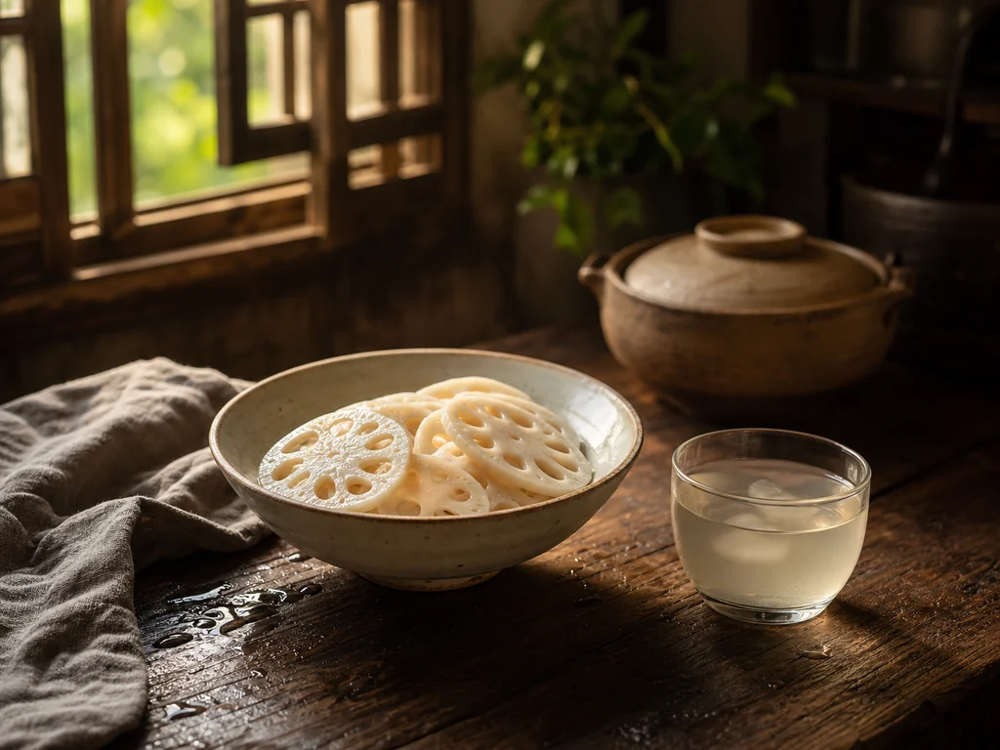

Lotus Root Water: The Pale Summer Sip
Lotus root water belongs to the plain side of Chinese summer cooking. It is a light kitchen drink made from an ingredient already used in soups, stir-fries, and market-season meals.

The root with windows
Cut lotus root across the stem and the slice shows a ring of holes. That shape is one reason the ingredient is remembered easily. In Chinese kitchens it appears in many forms: crisp in the wok, soft in soup, sweetened in festival dishes, or warmed in water for a simple seasonal drink.
As a summer custom, it sits near other light kitchen habits such as mung bean soup and winter melon tea. The shared pattern is simple: familiar ingredients, water, heat, and a drink that can sit on the table between meals.
Not a dish, just a habit
The household version is usually described without precision. Lotus root is washed, sliced, and warmed with water until the liquid takes on a faint color. Some families add a little sweetness. Others keep it plain.
The softened slices are often eaten afterward or left in the pot until the water is poured out. In that sense, the custom is close to ordinary thrift: one ingredient gives both a drink and something to eat.
Where it fit in summer
Chinese summer kitchens often keep several levels of plain drinks: boiled water, light vegetable waters, and stronger seasonal drinks. Lotus root water sits in the quiet middle. It takes more handling than plain water but less preparation than sour plum drink.
Older Chinese food language often groups ingredients by season, texture, and serving occasion. Lotus root is commonly placed on the lighter side of that household vocabulary. This page records the behavior, not a claim.
The pale drink
Lotus root water is grouped here with summer kitchen foods because the behavior is simple and recurring: buy the root, wash it well, slice it, warm it in water, and serve the pale liquid without making a large dish from it.